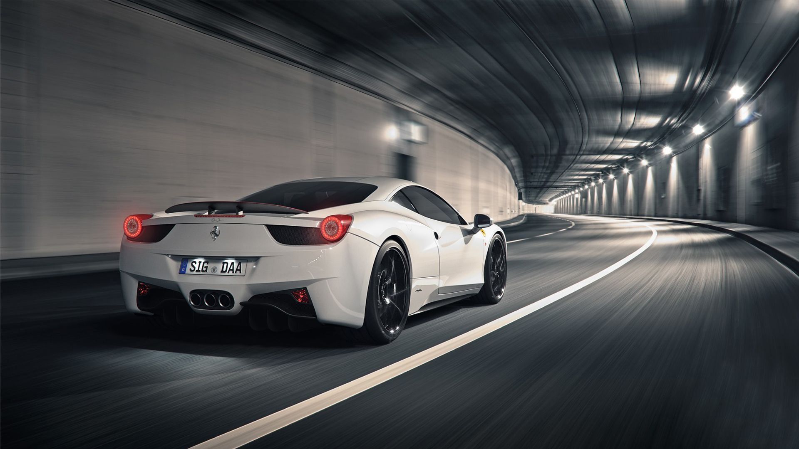
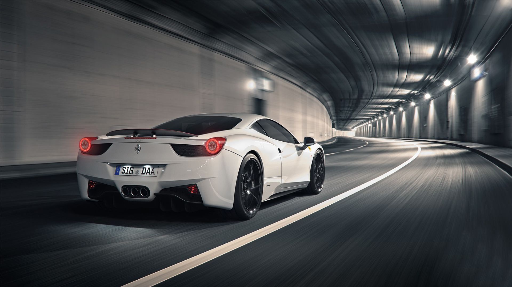

AUTOBIOGRAPHY LONG WHEELBASE.The pinnacle of refinement, Autobiography Long Wheelbase offers a luxury knurled finish and Executive Class seating in the rear.Unique grille with Graphite Atlas mesh and Bright Chrome inserts Unique exterior design cues and interior features with unique badging 21 inch seven-spoke ‘Style 706‘ with High Gloss Polished finish Semi-Aniline leather ‘Style 28’ 24-way driver and passenger front seats with front and rear climate seats, massage front seats. Rear Executive Class seating with massage lumbar, extended rear power recline and calf rest Meridian™ Signature Reference Audio System (1700W). (Meridian is a registered trademark of Meridian Audio Ltd) Gesture Tailgate Adaptive Xenon headlamps with LED signature lighting (includes headlamp powerwash) Sliding panoramic roof (including power blind)
GHOST EXTENDED WHEELBASE. Uncompromising, never ordinary – innovative technology and unrivalled engineering make driving Ghost intuitive. Effortless. Rooted in simplicity, every detail has a timeless elegance and purity, allowing you to forge a graceful path through an ever-changing world Hand-built by more than 60 pairs of hands, the precision and patience our craftspeople put into Ghost make it a masterpiece in its own right. From the five coats of paint on the bodyshell to the hand-stitched leatherwork inside, perfection is the benchmark. Anything less just won’t do. Instantly recognisable from the front, Ghost has a purposeful stance as it waits to be driven. Integrated LED headlights emit a mystical glow, framed by the unbroken daytime running lights. And the subtle sculpting of the bumper – together with the aerodynamic jet air intake-styled front grille – enhance its dynamism. Undeniably streamlined, the fluid lines are accentuated by the Spirit of Ecstasy, tilted seven degrees further forward and ready to lead the way as you take to the road. Bold and powerful yet remarkably restrained, Ghost is armed with a twin-turbo 6.6-litre V12 engine. Select from five wheel designs and two finishes, each featuring our unique, self-righting wheel centres - so that the Rolls-Royce monogram is always displayed upright.


Ferrari 488 GTB. Designed by the Ferrari Styling Centre, the 488 GTB features very sculptural flanks which are the key to its character. Its large signature air intake scallop is a nod to the original 308 GTB and is divided into two sections by a splitter. Designed by the Ferrari Styling Centre, the 488 GTB features very sculptural flanks which are the key to its character. Its large signature air intake scallop is a nod to the original 308 GTB and is divided into two sections by a splitter. The front is characterised by the dual grille opening which channels air into the two radiators. There is also a double front spoiler which, on close inspection, looks very like those of the F1 single-seaters. At the centre two pylons are combined with a deflector which channels air towards the flat underbody. The 488 GTB’s cabin was designed to exude extreme sportiness without sacrificing occupant comfort. This heightens the impression of a cockpit tailored around the driver’s needs: the commands not clustered on the steering wheel are on the wraparound satellite pods which are -angled directly towards the driver. The new lighter, horizontally more compact dashboard features ultra-sporty air vents inspired by military jet air intakes.
 
